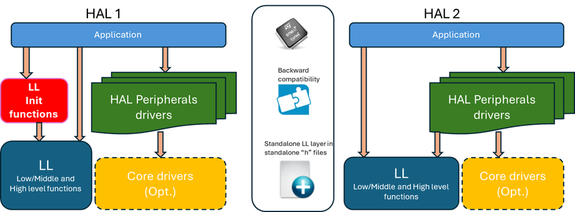

HAL systematic usage of LL services ¶
The concept: HAL-over-LL principle ¶
The HAL (Hardware Abstraction Layer) is designed to offer a high-level, user-friendly interface for hardware peripherals, built on top of the LL (Low-Layer) drivers. HAL2 abstracts the complexity of LL drivers, making peripheral configuration and control easier without dealing with register-level programming. This layered approach balances ease of use with control and efficiency, providing portability across different hardware platforms while leveraging LL drivers’ performance and precision.
HAL2 relies on LL drivers for register access operations, ensuring consistent and reliable hardware interaction. This delegation enhances code maintainability and readability, with any updates or optimizations in LL drivers automatically benefiting HAL.
Key aspects of HAL include parameter checking, state transitions, and logical sequences for configuration and processing. HAL validates input parameters, manages state transitions, and follows logical sequences for initialization and operation, enhancing reliability and user experience through return values and callbacks.
In contrast, LL focuses on providing efficient APIs for direct hardware access, adhering to STM32 reference manuals. LL drivers offer low-level access and optimal performance, while HAL provides a uniform interface for application development. This distinction allows HAL to simplify peripheral control, leveraging LL’s direct and efficient hardware control.
Note
HAL-over-LL principle, which aims to:
-
Provide a clear and comprehensive LL sequence to the user in the HAL implementation.
-
Allow users to migrate easily from HAL to LL as a clear LL sequence is provided.
-
Provide a clearly layered solution with HAL over LL at the function level (not the register level).
-
Make STM32CubeMX2 LL code generation for configuration sequences aligned with the HAL implementation sequences (the sequence is already provided and validated by the HAL).
Note
-
Some system HALs, such as the Cortex, are implemented on top of the CMSIS core services. The principle remains that the HAL does not directly access the registers when an LL (Low-Layer) driver is provided or when the service is provided by the CMSIS core.
-
When no LL driver is provided for the given peripheral (e.g., HAL FDCAN), the HAL driver for that peripheral is permitted to perform direct register access.
Warning
The LL initialization functions provided within files
stm32tnxx_ll_ppp.c
in HAL1 are no longer available in HAL2.
In HAL2, all LL
stm32tnxx_ll_ppp.c
(C file) are removed and only the
stm32tnxx_ll_ppp.h
LL header files containing static inline functions are kept.
If users needs to initialize a given peripheral using the LL layer, they shall rely on STM32CubeMX2 code generation with the LL layer.
This generates the required sequence based on the LL static inline functions provided within the
stm32tnxx_ll_ppp.h
header (.h) files.
The given generated sequence provides better footprint optimization compared to the previous LL Init functions provided in
stm32tnxx_ll_ppp.c
.


Note
LL Low level APIs are the
LL_PPP_WRITE_REG()
/
LL_PPP_READ_REG()
(redirection of CMSIS registers operations).
Example:
#define LL_TIM_WRITE_REG(instance, reg, value) WRITE_REG((instance)->reg, (value))
#define LL_TIM_READ_REG(instance, reg) READ_REG((instance)->reg)
LL Middle level APIs are the one-shot operations APIs (atomic) and the elementary
LL_PPP_SetItem()
and
LL_PPP_Action()
functions.
Examples:
__STATIC_INLINE void LL_ADC_Enable(ADC_TypeDef *p_adc)
{
MODIFY_REG(p_adc->CR, LL_ADC_CR_BITS_PROPERTY_RS, ADC_CR_ADEN);
}
__STATIC_INLINE void LL_LPTIM_SetCounterMode(LPTIM_TypeDef *lptimx, uint32_t counter_mode)
{
MODIFY_REG(lptimx->CFGR, LPTIM_CFGR_COUNTMODE, counter_mode);
}
LL High level APIs are the configuration functions that cover full standalone operations on relative peripheral registers. Examples:
__STATIC_INLINE void LL_I2C_ConfigOwnAddress1(I2C_TypeDef *p_i2c, uint32_t own_address1, uint32_t own_addr_size)
{
WRITE_REG(p_i2c->OAR1, I2C_OAR1_OA1EN | own_address1 | own_addr_size);
}
__STATIC_INLINE void LL_RTC_TIME_Config(uint32_t Format12_24, uint32_t Hours, uint32_t Minutes,
uint32_t Seconds)
{
uint32_t temp;
temp = Format12_24 | \
(((Hours & 0xF0U) << (RTC_TR_HT_Pos - 4U)) | ((Hours & 0x0FU) << RTC_TR_HU_Pos)) | \
(((Minutes & 0xF0U) << (RTC_TR_MNT_Pos - 4U)) | ((Minutes & 0x0FU) << RTC_TR_MNU_Pos))| \
(((Seconds & 0xF0U) << (RTC_TR_ST_Pos - 4U)) | ((Seconds & 0x0FU) << RTC_TR_SU_Pos));
WRITE_REG(RTC->TR, temp);
}
HAL implementation relies on LL inline functions instead of direct register access. ¶
HAL implementation relies on LL inline functions instead of direct register access. This concept pertains to the internal implementation of the HAL. It has no impact on the user application, so no particular actions are required for migrating from HAL1 to HAL2 regarding this concept.
Nevertheless, it is useful to understand this concept in case the user needs to transition their application from using HAL APIs to the equivalent LL APIs. This could be part of a process aimed at optimizing the user application footprint by implementing a sequence of LL calls instead of using the higher abstraction HAL API. In this process, the user can eliminate the various logical checks and state management provided by the HAL.
HAL DCACHE example:
|
HAL1 |
HAL2 |
|---|---|
HAL_StatusTypeDef HAL_DCACHE_Invalidate(DCACHE_HandleTypeDef *hdcache)
{
...
/* Set no operation on address range */
MODIFY_REG(hdcache->Instance->CR, DCACHE_CR_CACHECMD, 0U);
/* Launch cache invalidation */
SET_BIT(hdcache->Instance->CR, DCACHE_CR_CACHEINV);
...
}
|
hal_status_t HAL_DCACHE_Invalidate(hal_dcache_handle_t *hdcache)
{
...
/* Set no operation on address range */
LL_DCACHE_SetCommand(p_dcachex, LL_DCACHE_COMMAND_NO_OPERATION);
/* Launch DCACHE invalidation */
LL_DCACHE_Invalidate(p_dcachex);
...
}
|
HAL defines and enum(those used for HW registers) are redirected to the equivalent LL ones. ¶
In HAL1, the various defines and enumerations for possible values use the various register bitfield defines (provided in the CMSIS device header files). In HAL2, these defines and enumerations for possible values are redirected to the equivalent LL defines. This allows for an easier transition from a HAL-based application to an LL-based application.
Examples:
|
HAL1 |
HAL2 |
|---|---|
#define RCC_MCO1SOURCE_NOCLOCK 0x00000000U
#define RCC_MCO1SOURCE_SYSCLK RCC_CFGR1_MCOSEL_0
#define RCC_MCO1SOURCE_MSI RCC_CFGR1_MCOSEL_1
#define RCC_MCO1SOURCE_HSI (RCC_CFGR1_MCOSEL_0 | RCC_CFGR1_MCOSEL_1)
#define RCC_MCO1SOURCE_HSE RCC_CFGR1_MCOSEL_2
#define RCC_MCO1SOURCE_PLL1CLK (RCC_CFGR1_MCOSEL_0 | RCC_CFGR1_MCOSEL_2)
#define RCC_MCO1SOURCE_LSI (RCC_CFGR1_MCOSEL_1 | RCC_CFGR1_MCOSEL_2)
#define RCC_MCO1SOURCE_LSE (RCC_CFGR1_MCOSEL_0 | RCC_CFGR1_MCOSEL_1 | RCC_CFGR1_MCOSEL_2)
#define RCC_MCO1SOURCE_HSI48 RCC_CFGR1_MCOSEL_3
#define RCC_MCO1SOURCE_MSIK (RCC_CFGR1_MCOSEL_0 | RCC_CFGR1_MCOSEL_3)
#define RCC_MCODIV_1 0x00000000U
#define RCC_MCODIV_2 RCC_CFGR1_MCOPRE_0
#define RCC_MCODIV_4 RCC_CFGR1_MCOPRE_1
#define RCC_MCODIV_8 (RCC_CFGR1_MCOPRE_0 | RCC_CFGR1_MCOPRE_1)
#define RCC_MCODIV_16 RCC_CFGR1_MCOPRE_2
void HAL_RCC_MCOConfig(uint32_t RCC_MCOx, uint32_t RCC_MCOSource, uint32_t RCC_MCODiv)
{
...
MODIFY_REG(RCC->CFGR1, (RCC_CFGR1_MCOSEL | RCC_CFGR1_MCOPRE), (RCC_MCOSource | RCC_MCODiv));
}
|
typedef enum
{
HAL_RCC_MCO_SRC_NOCLOCK = LL_RCC_MCO1SOURCE_NOCLOCK,
HAL_RCC_MCO_SRC_SYSCLK = LL_RCC_MCO1SOURCE_SYSCLK,
HAL_RCC_MCO_SRC_MSI = LL_RCC_MCO1SOURCE_MSIS,
HAL_RCC_MCO_SRC_HSI = LL_RCC_MCO1SOURCE_HSI,
HAL_RCC_MCO_SRC_HSE = LL_RCC_MCO1SOURCE_HSE,
HAL_RCC_MCO_SRC_PLL1CLK = LL_RCC_MCO1SOURCE_PLLCLK,
HAL_RCC_MCO_SRC_LSI = LL_RCC_MCO1SOURCE_LSI,
HAL_RCC_MCO_SRC_LSE = LL_RCC_MCO1SOURCE_LSE,
HAL_RCC_MCO_SRC_HSI48 = LL_RCC_MCO1SOURCE_HSI48,
HAL_RCC_MCO_SRC_MSIK = LL_RCC_MCO1SOURCE_MSIK,
} hal_rcc_mco_src_t;
typedef enum
{
HAL_RCC_MCO_DIV1 = LL_RCC_MCO1_DIV_1,
HAL_RCC_MCO_DIV2 = LL_RCC_MCO1_DIV_2,
HAL_RCC_MCO_DIV4 = LL_RCC_MCO1_DIV_4,
HAL_RCC_MCO_DIV8 = LL_RCC_MCO1_DIV_8,
HAL_RCC_MCO_DIV16 = LL_RCC_MCO1_DIV_16,
} hal_rcc_mco_div_t;
void HAL_RCC_SetConfigMCO(hal_rcc_mco_src_t mco_src, hal_rcc_mco_div_t mco_div)
{
...
LL_RCC_ConfigMCO((uint32_t)mco_src, (uint32_t)mco_div);
}
|
#define GPIO_PIN_0 ((uint16_t)0x0001)
#define GPIO_PIN_1 ((uint16_t)0x0002)
#define GPIO_PIN_2 ((uint16_t)0x0004)
#define GPIO_PIN_3 ((uint16_t)0x0008)
#define GPIO_PIN_4 ((uint16_t)0x0010)
#define GPIO_PIN_5 ((uint16_t)0x0020)
#define GPIO_PIN_6 ((uint16_t)0x0040)
#define GPIO_PIN_7 ((uint16_t)0x0080)
#define GPIO_PIN_8 ((uint16_t)0x0100)
#define GPIO_PIN_9 ((uint16_t)0x0200)
#define GPIO_PIN_10 ((uint16_t)0x0400)
#define GPIO_PIN_11 ((uint16_t)0x0800)
#define GPIO_PIN_12 ((uint16_t)0x1000)
#define GPIO_PIN_13 ((uint16_t)0x2000)
#define GPIO_PIN_14 ((uint16_t)0x4000)
#define GPIO_PIN_15 ((uint16_t)0x8000)
#define GPIO_PIN_ALL ((uint16_t)0xFFFF)
|
#define HAL_GPIO_PIN_0 LL_GPIO_PIN_0
#define HAL_GPIO_PIN_1 LL_GPIO_PIN_1
#define HAL_GPIO_PIN_2 LL_GPIO_PIN_2
#define HAL_GPIO_PIN_3 LL_GPIO_PIN_3
#define HAL_GPIO_PIN_4 LL_GPIO_PIN_4
#define HAL_GPIO_PIN_5 LL_GPIO_PIN_5
#define HAL_GPIO_PIN_6 LL_GPIO_PIN_6
#define HAL_GPIO_PIN_7 LL_GPIO_PIN_7
#define HAL_GPIO_PIN_8 LL_GPIO_PIN_8
#define HAL_GPIO_PIN_9 LL_GPIO_PIN_9
#define HAL_GPIO_PIN_10 LL_GPIO_PIN_10
#define HAL_GPIO_PIN_11 LL_GPIO_PIN_11
#define HAL_GPIO_PIN_12 LL_GPIO_PIN_12
#define HAL_GPIO_PIN_13 LL_GPIO_PIN_13
#define HAL_GPIO_PIN_14 LL_GPIO_PIN_14
#define HAL_GPIO_PIN_15 LL_GPIO_PIN_15
#define HAL_GPIO_PIN_ALL LL_GPIO_PIN_ALL
|